景點介紹
- 1
- 2
- 3
- 4
- 5
- 6
- 7
- 8
-
鳥松區
澄清湖迷宮花園

澄清湖本身就是很大的自然休閒區，但今年年初建立了一個新的迷宮花園，裡面有哈比屋、水管迷宮等等，適合做為遛小孩的好去處！除了這些遊樂設施，旁邊也是一個大草皮，適合春天的時候帶個野餐墊來野野餐呢！
了解更多 -
鼓山區
大港橋
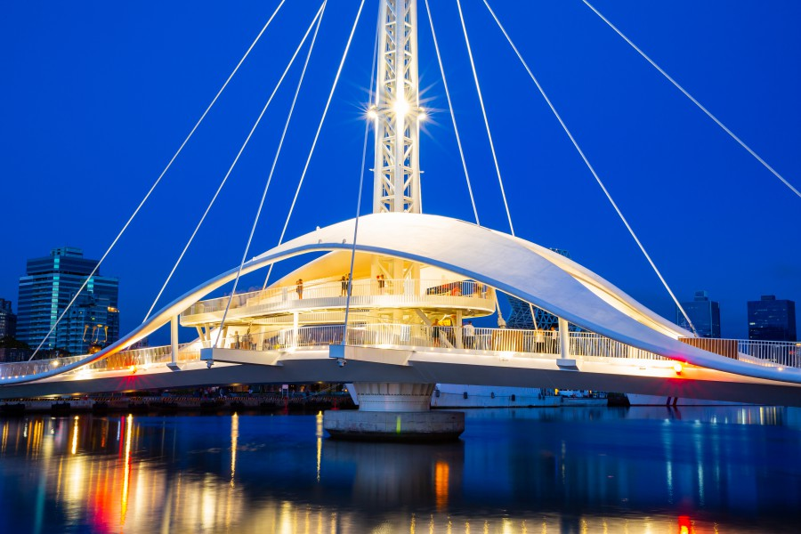
大港橋是高雄的新地標，是全台首座水平旋轉橋，就位在大家所熟知的駁二藝術特區旁邊，串連起棧庫群、駁二藝術特區、水岸觀光廊道，成為高雄新興的散步區域，不論是看夕陽、約會，都很適合！
了解更多 -
三民區
三塊厝車站
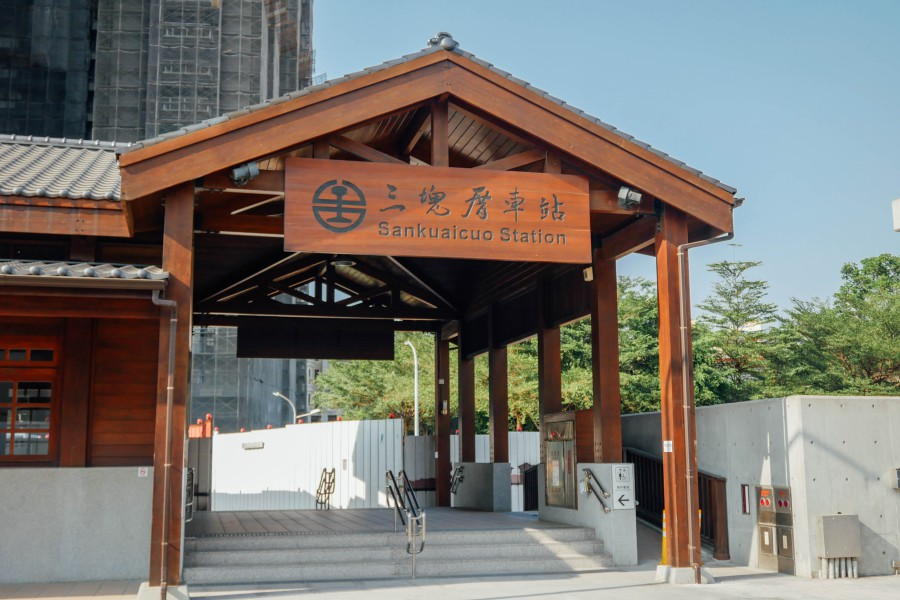
三塊厝車站比高雄車站的歷史還悠久，在高雄車站尚未出現之前，三塊厝車站的週邊機能發達，但後來鐵道地下化，加上高雄車站取代其功能後，三塊厝車站就被荒廢了，一直到2007年才又開始修復，保留了當初的木造舊站房，並在旁邊蓋了一座新的古色古香木製車站。
了解更多
-
田寮區
石頭廟
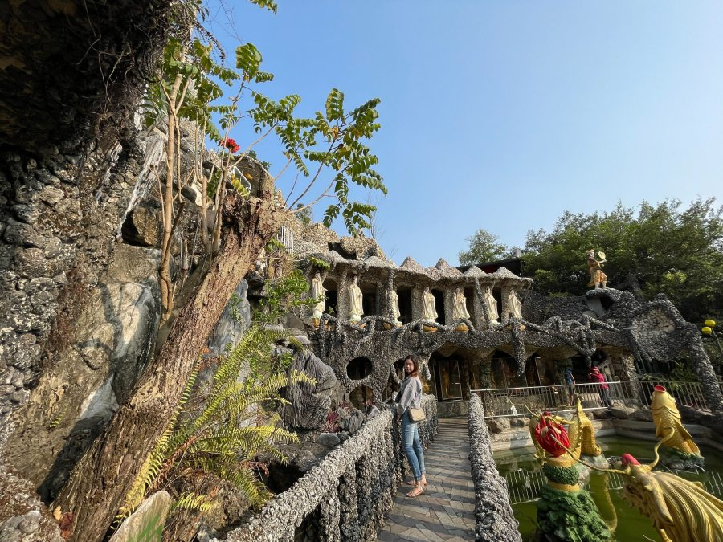
高雄的石頭廟位在田寮的慈玄聖天空，整座廟宇都是利用白色珊瑚時所建造而成，很像是泰國清邁的白廟，而這間廟也真的是泰國人建成的，早期泰國移工來台建高速公路，但卻因為承包商倒閉，頓時無家可歸，之後遇上好心的住持收留，為了報恩就手工用石頭堆砌成廟宇，充滿南洋風情，也是近期IG最夯的高雄打卡景點。
了解更多 -
大樹區
大樹舊鐵橋
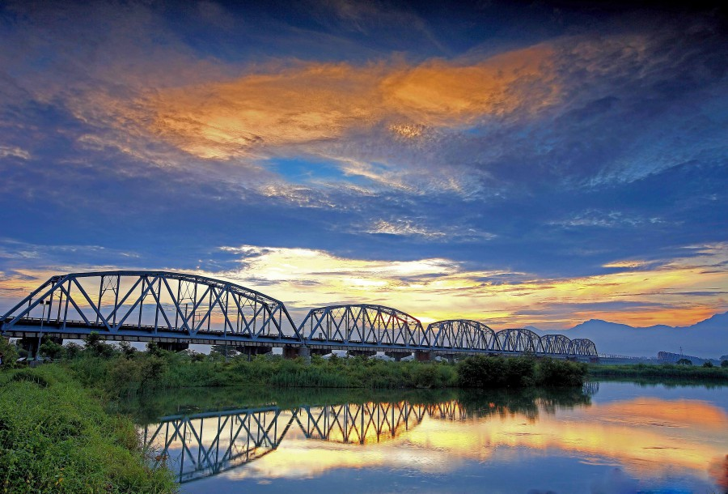
大樹舊鐵橋是由舊鐵路改造而成的天空步道，藍白色鋼筋鐵橋步道配上藍天與綠地，成為網美照勝地之一，而且這個鐵道跟《德魯納酒店》的三途川橋有異曲同工之妙，去不了韓國，就走大樹舊鐵橋過過乾癮。鐵橋的下方草地也規劃的很完善，不少人在假日時在這裡野餐，順便欣賞對面真正的火車鐵道，許多火車班次都會經過這條鐵道，不用怕會撲空～結束後還可以到三和瓦窯吃個小本愛玉消消暑。
了解更多 -
鼓山區
打狗英國領事館文化園區
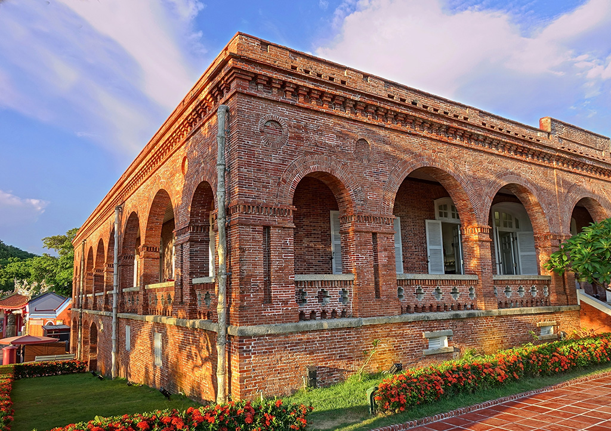
打狗英國領館文化園區位在西子灣山的山腰處，視野極好，可以遠挑高雄港灣和85大樓，建築風格是文藝復興時代的巴洛克風格，外觀採紅磚建築、圓拱設計，裡面則是有彩繪玻璃、石雕等，經過整修後，變身為現在的園區，可以邊喝下午茶、邊等日落。 這裡的拍照小技巧，就是找一個圓拱向外的小窗台，可以看得到港灣、85大樓，加上撒下的自然光或是日落的昏黃光線，輕輕鬆鬆就可以get超美的網美照！
了解更多 -
左營區
果貿社區
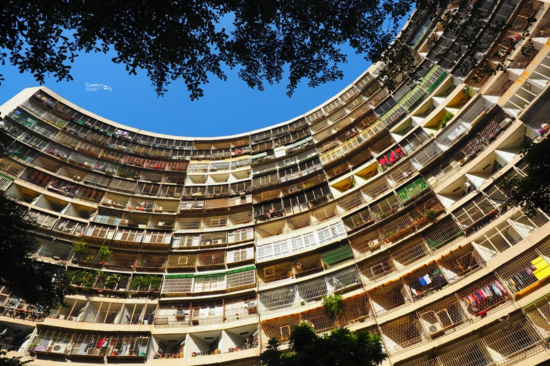
果貿社區是由幾棟老大樓集結合成的大型集合式住宅，圓弧形和長方形錯落的景色，像極了香港的蜂窩式住宅，因此也被稱為「小香港」。大家都會從下往上拍，拍出建築的密集度，或是站在半弧形的公寓前拍網美照，可以輕鬆擁有無限延伸感。果貿社區是由眷村改建而成，所以這裡也有開設許多眷村料理，來參觀時不妨留一點時間吃吃看道地的眷村口味。
了解更多
-
前金區
鹽埕白色戀人貨櫃屋

間咖啡廳是位在愛河旁邊的著名IG打卡景點，不管在一樓還是二樓，皆有不同的感覺～可以坐在位置上看愛河的風景，也可以在盪鞦韆上拍拍美照。不管是下午或是晚上來，都是人潮滿滿。很適合情侶、朋友一起來唷～
了解更多 -
彌陀區
彌陀漁港海岸光廊
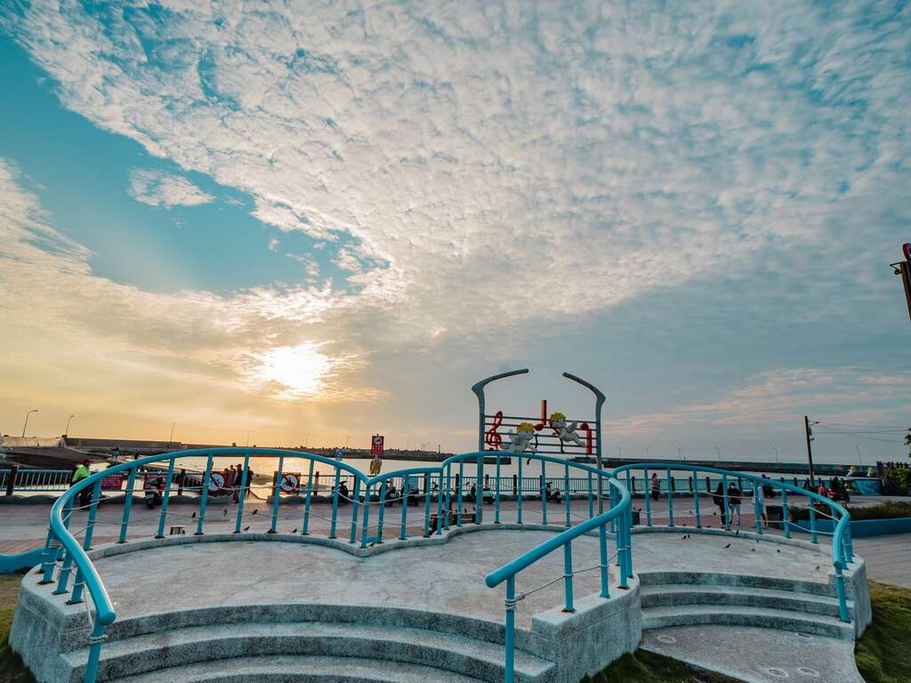
相比其他的親子景點，這裡的偏戶外玩水風，位在漁港附近的海岸光廊。可以免費玩水跟親子公園，實在是不亦樂乎，防波堤上則有3D彩繪可以拍照呢！尤其夏天下午來到傍晚的時候除了有夕陽，也會比較涼爽一點。適合想帶小朋友安全玩水的爸媽帶孩子一起玩，除了是個親子景點外，也是年輕人的拍照IG打卡必去！
了解更多 -
前鎮區
高雄市立圖書館總館

位在85大樓附近的高雄市立圖書館總館。具有現代感設計的高雄總圖，不僅是世界第一座懸吊式綠建築，還是全球景觀穿透性最高的圖書館，因此晚上的高雄總圖館更是美得令人著迷。即使不在圖書館內閱讀書籍，也可以上頂樓的空中花園眺望整座高雄港，是隱藏版的夜景觀賞景點呢！
了解更多 -
鹽埕區
駁二藝術特區
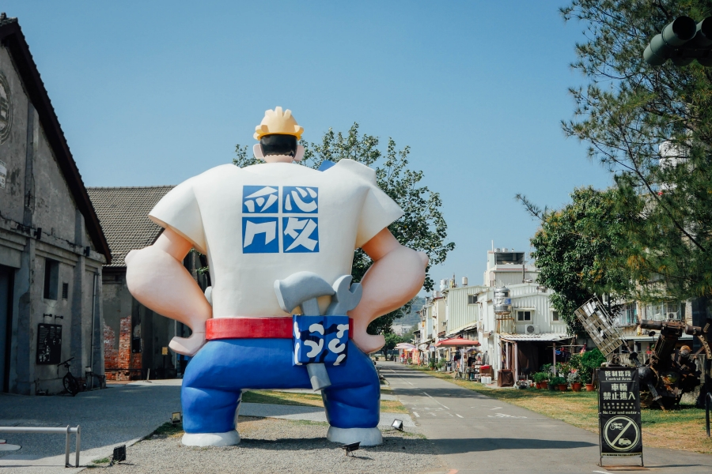
位於捷運站鹽埕埔附近的駁二特區其實是由老舊的倉庫改造而成的，現在則成為時常舉辦展覽、市集的藝文場所。駁二藝術特區目前分成大勇倉庫、蓬萊倉庫和大義倉庫三大區，駁二電影院和誠品書店都在大勇倉庫區，而大義倉庫有很多特色文青小店，有名的微熱山丘鳳梨酥店也位於此。
了解更多
-
鼓山區
棧貳庫KW2
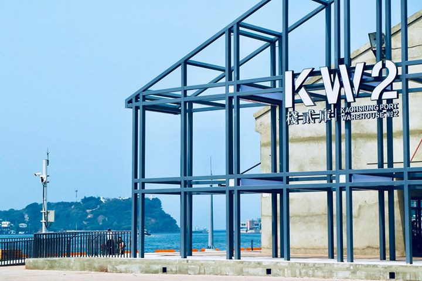
棧貳庫位於高雄港2號碼頭，是近年來人氣爆棚的新景點，尤其是位在靠海側廣場的純白旋轉木馬更是網美們必訪的拍照取景地。曾歷經長年閒置的棧貳庫不只進駐許多美食，還匯集了許多文創小店和台灣代表品牌，裡面也有足夠的休憩空間，可以從一整面落地窗往外欣賞海景，輕鬆愉快地度過一天。
了解更多 -
新興區
逍遙園

逍遙園是近幾年重新開放的古蹟景點，原本是日本佛教第22代門主的別墅。重新裝潢後，重現了當年的日式風格樣貌，庭院種了很多花草樹木及建造一個水池一樓是以呈現、說明其風格為主要的參觀空間，二樓則是展現出他的日常起居。園區內部除了建築外，也有茶行等小食舖喔！
了解更多 -
小港區
淨園農場
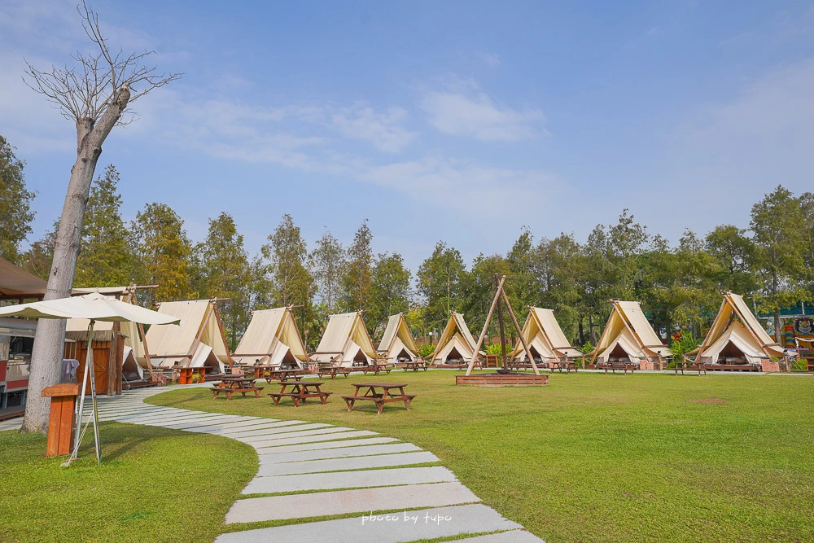
淨園農場可不是像一般的農場僅有綠地，這裡因為距離小港機場很近，可以零距離看到飛機起飛與降落，是南台灣著名的機場咖啡，為了給遊客最舒適的環境，農場設計成像是庭園一樣，有小水池、花園、草地等造景，咖啡廳甚至有鸚鵡、獅子、羊兒、羊駝等，就是一座小小動物園，邊喝咖啡還可以邊看可愛的小動物們。 今年的淨園農場更是全面升級，加碼推出了星空帳篷，整個園區打造成米白色的南洋風格露營區，在玻璃包廂賞星空、聽音樂，現場還有提供野餐墊，可以讓你帶著園區裡的食物，在大草原中野餐，當夜晚露營區點燈時，浪漫程度破表！
了解更多 -
鼓山區
壽山情人觀景台
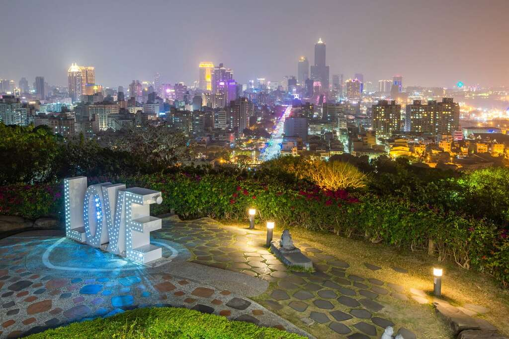
壽山情人觀景台是位在忠烈祠入口附近的觀景台，因為可以俯瞰整個高雄市區，遠眺高雄港灣、85大樓，所以成為不少人看夜景的地方。 這裡會有「情人觀景台」的稱號，是因為在小看台的中央，有放上大大的Love字樣，不少情侶們都會在這裡合影，再往上走一點，還會看到印有各國語言的「我愛你」符號，夜晚打燈時，會更有fu～
了解更多
-
六龜區
神威天台山
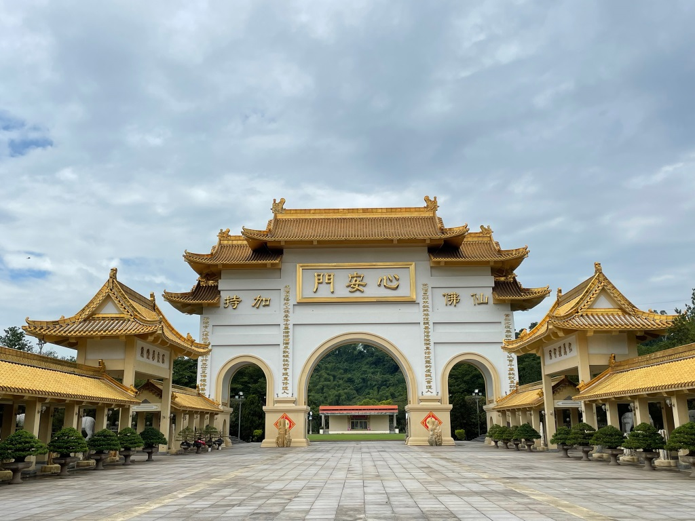
神威天台山位於六龜區省道台27甲14K處，佔地達300多公頃，是全台規模最大的一貫道道場，主體建築分為前殿、中殿、後殿，在陽光的照射下，金碧輝煌，散發著莊嚴肅穆的氛圍，殿內的白玉佛像是用全亞洲最大的一個白玉石頭雕刻而成的。放置三座佛像的桌子材質為百年香樟樹，為了承受極大的重量，佛像底座先以地基打牢，再設置壇桌，由於體積非常巨大，還曾參加金氏世界紀錄。
了解更多 -
六龜區
浦來溪頭社戰道

「戰道」的由來，是因為當時台灣為日治時代，然而原住民則採取不服從的抗日活動來面對高壓，日本政府得知情報，於是派人沿著稜線運送彈藥、炮管等軍事武器，到對面的美輪山建造砲台，為的是攻打鎮壓浦來溪頭社的村民。日本政府趁著夜晚運送軍事武器，無形中，將原本的浦來溪頭社往來使用的步道成了一條戰道，此外原住民們也會沿著戰道，突襲攔截日本軍隊。
了解更多 -
美濃區
美濃民俗村
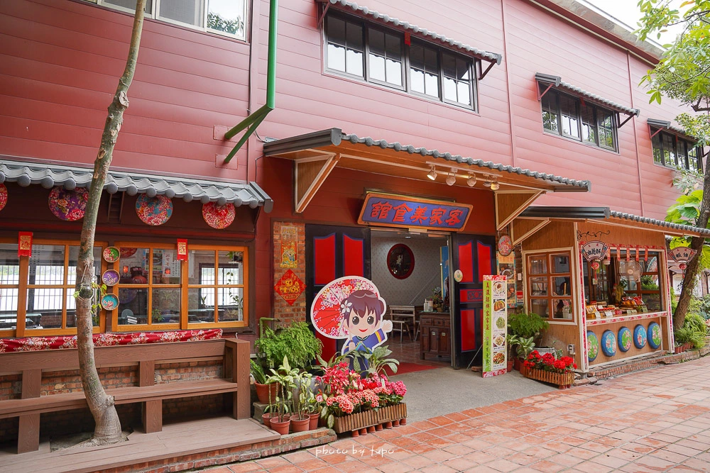
美濃最有名的就是油紙傘藝術啦～想要看看客家元素的景點這裡也有呢，雖然逛一個多小時就可以逛完了，但喜歡客家民俗風的朋友可以這裡做DIY油紙傘或是客家擂茶。走累了也可以走進餐廳來點客家菜餚或是清冰，很適合闔家帶來的一個景點唷！
了解更多 -
大樹區
義大遊樂世界

位於高雄大樹區的義大世界，總共佔地90公頃，結合了義大皇家酒店、義大世界購物廣場和義大遊樂世界，不論是要購物血拼還是親子同樂都非常適合。 義大遊樂世界以希臘情境為主題，除了有很多希臘風情的建築物可以拍照，設施也非常豐富，不論是刺激的或是兒童適宜的都具備，還有位在特洛伊城堡B1的VR主題館也是許多人大推的設施。另外，只要出示樂園的手章，就可以去義大世界購物廣場搭乘免費摩天輪唷！
了解更多
-
茂林區
龍頭山老鷹谷
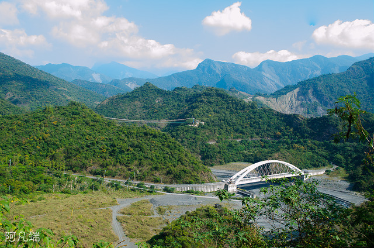
龍頭山因為溪流長年沖刷、侵蝕，形成了特殊的環流丘地形，此地形擁有崎嶇的山勢、多崖壁，吸引許多老鷹會在清晨與黃昏時盤旋在山谷間，因此有人也會稱龍頭山為「老鷹谷」。 龍頭山步道可以俯瞰溪谷的多種樣貌，加上兩側翠綠山群環繞，讓步道拍起來有無限延伸之感，11月～1月前來，還有機會看到一整片雪白的芒草舖滿整個山頭，美到像仙境，沿著步道最後會走到多納高吊橋，可以欣賞到峽谷與溪流的美景，大家最常合影的是位在吊橋入口處英姿煥發的老鷹，拍起來超帥～
了解更多 -
鳳山區
大東文化藝術中心
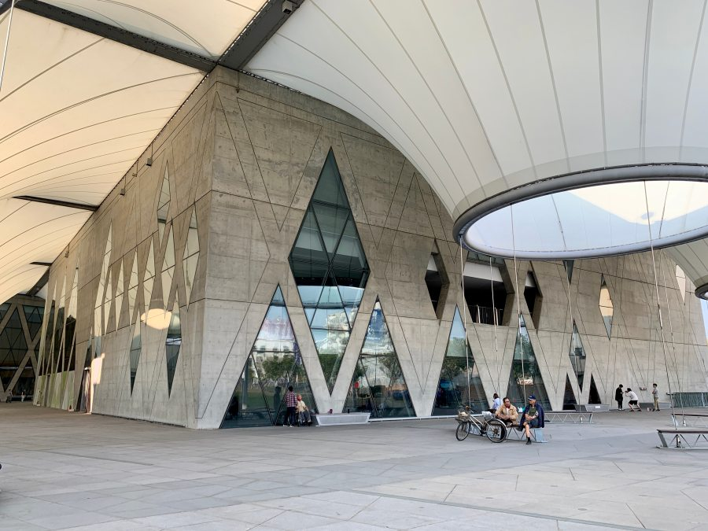
大東文化藝術中心位在大東國小校地內，園區內設有多功能演藝廳、戶外劇場、演藝廳、展覽館、藝術教育中心等，外觀建築走的是清水建築路線的極簡美學，最具特色的地方在於半透光的天棚，從遠處看很像熱氣球的形狀，當天棚點燈之後，會更加的絢爛奪目
了解更多 -
鳳山區
衛武營國家藝術文化中心
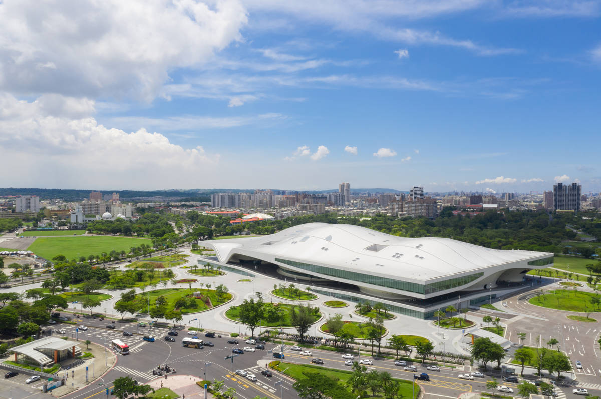
衛武營佔地廣大，是南台灣最大的自然生態都會公園，與壽山並稱為高雄的左右肺。而在這當中，曾經身為軍事基地的衛武營國家藝術中心現在已蛻變成台灣最大的國際級藝術表演中心，甚至還是世界最大的單一屋頂建築，因此還被美國時代雜誌評選為「2019年世界最佳景點」之一
了解更多 -
田寮區
月世界地景公園
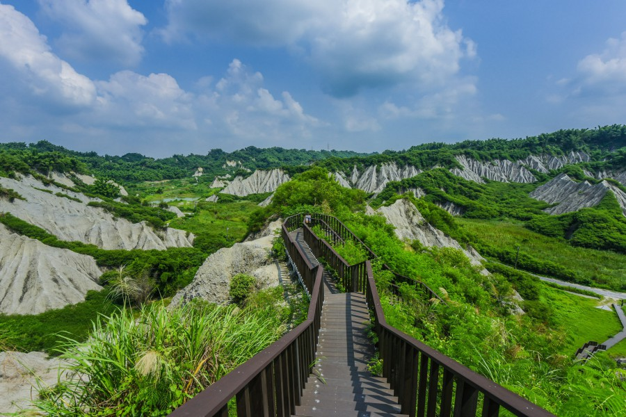
田寮月世界因為長年經歷風吹、日曬、雨淋，地表承受不起這麼強烈的考驗，進而造成了惡劣的地形，雖然之前有建造攔砂壩作為儲水的地方，但一樣被雨水侵蝕，現在僅剩下荒涼的地理景觀，像是月球表面一樣。
了解更多
-
鼓山區
西子灣
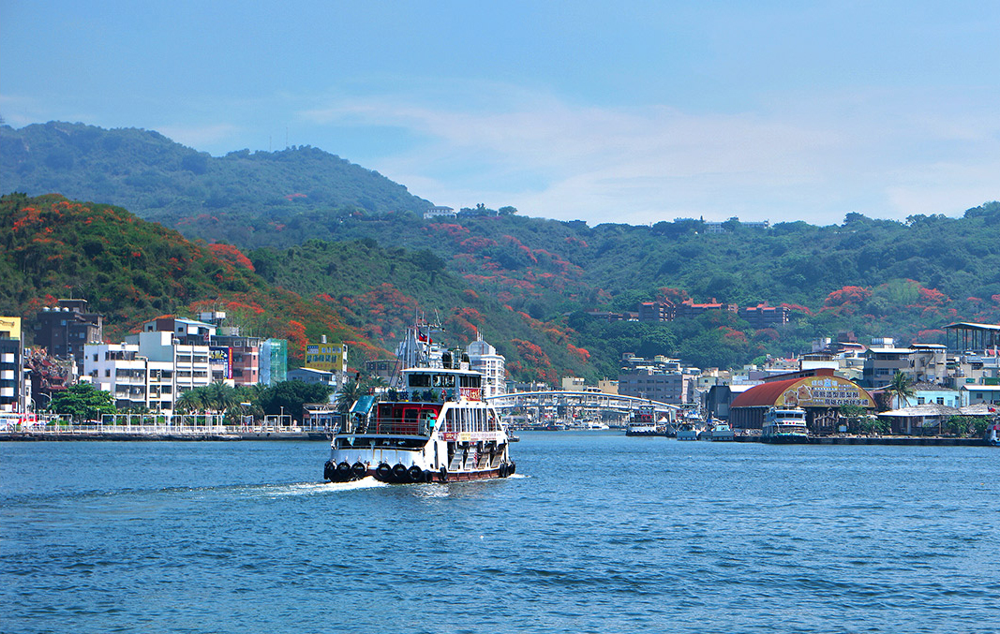
有高雄八大勝景之一稱號的西子灣最著名的就是太陽西下的美景，即使是隨便停下靠一海岸觀看都非常漂亮。如果有時間的話，小編蠻推薦打狗英國領事館這個看夕陽的景點，雖然爬樓梯有點辛苦，但從高處欣賞別有一番風味。
了解更多 -
旗津區
旗津風車公園

旗津風車公園它銜接旗津漁港的觀光步道，扮演過港隧道進入旗津門面的第一個海岸印象景點，旗津擁有豐沛的風力資源，七座造型獨特的三葉式風車面對遼闊的海面不停轉動，園區 ...
了解更多 -
前鎮區
SKM Park Outlets
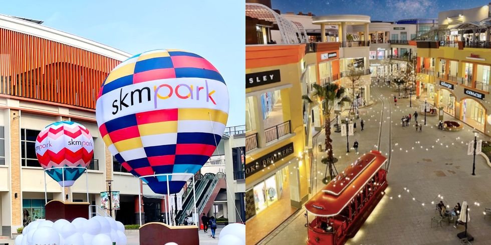
SKM Park Outlets 高雄草衙是新光三越旗下首間outlet，以「國際級生活複合式Lifestyle Outlets」為定位，整體流轉歐美Outlet購物中心的渡假氛圍，從逛街、吃飯、遊樂園、按摩、電影等服務通通有，完全可以玩上一整天，而且搭捷運紅線就能輕鬆逛！佔地達8萬7千平方米，有約220家店舖進駐以及50個獨家品牌
了解更多
-
新興區
美麗島站
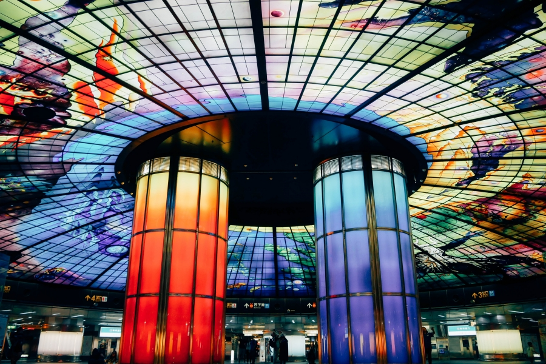
身為高雄捷運兩條線的轉乘站美麗島捷運站，可是被評選為全球最美的捷運站第二名！從捷運改札口出站，便可看見美麗島捷運站大廳的玻璃藝術作品「光之穹頂」，整面天花板運用交錯的色彩和圖像展現出豐富的故事，創作的故事主題在講述人的一生，以水、土、光、火，分別象徵生命的孕育、繁榮與成長、創造精神以及毀滅與重生。
了解更多 -
鼓山區
柴山漁港
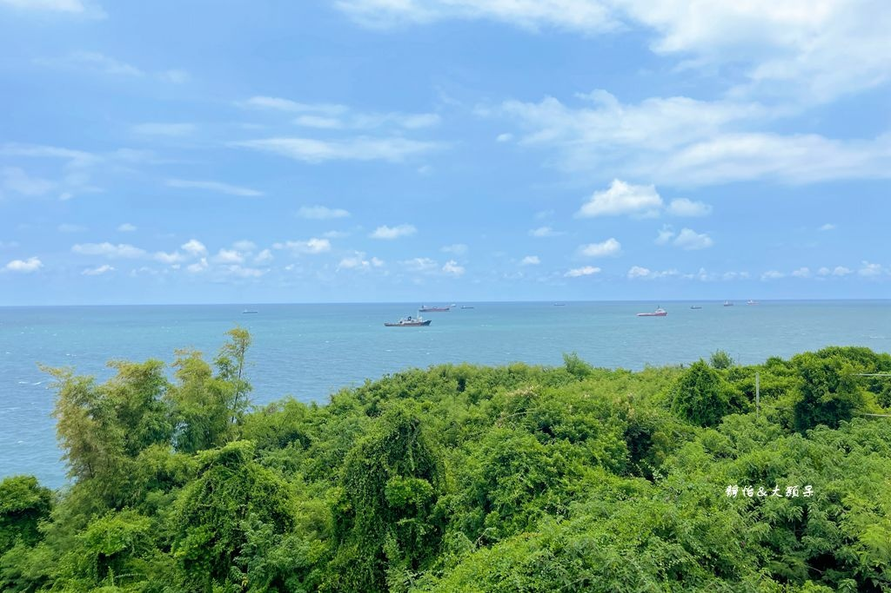
高雄看海景點除了廣為人知的旗津、西子灣之外，柴山小漁港是更好的選擇，靜謐純樸的小漁港，沒有濃濃的商業氣息，還有幾家小巧的海景咖啡廳可以看海喝咖啡，也可以順道走訪柴山阿朗壹古道、柴山海蝕洞，柴山半日遊安排起來，都是很棒的柴山景點！ 了解更多 -
三民區
三鳳宮
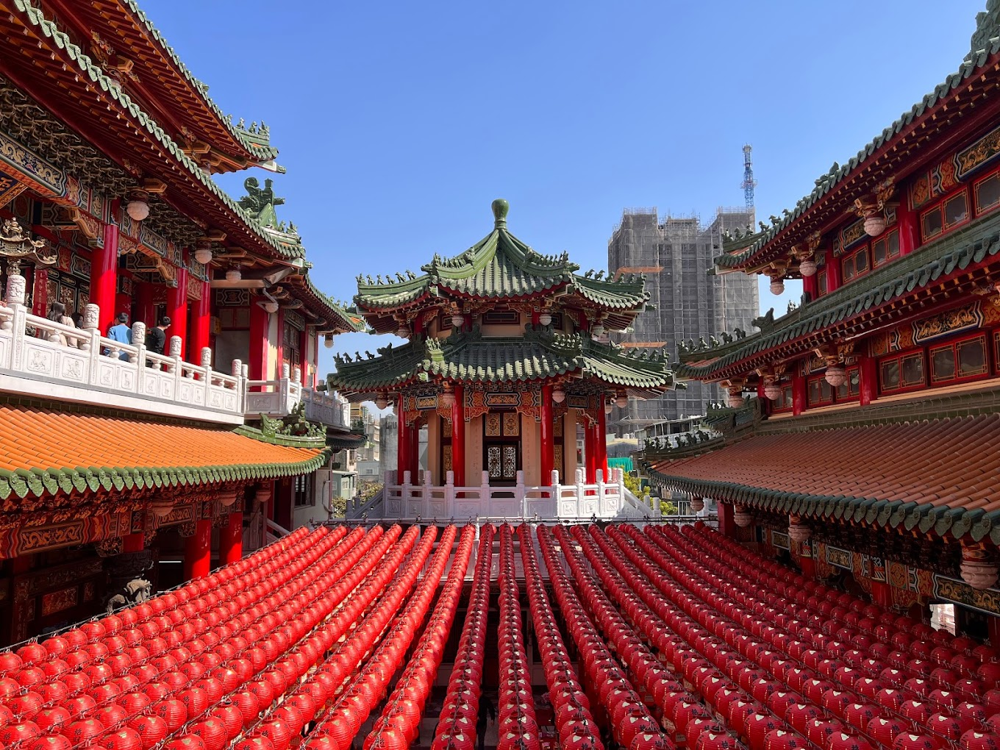
三鳳宮（舊名三鳳亭）所祀主神為中壇元帥哪吒太子為三塊厝之守護神又稱三塊厝為太子爺廟，建於清康熙年間，至今已三百五十年，蓋三塊厝村已開拓三、四百餘年矣，全台民間之習俗每結成一村落，則有一座守護神廟，以鎮護之，且云本廟為茅葺草創，不知經過幾番擴展重修始成為略具規模之廟宇
了解更多 -
左營區
蓮池潭
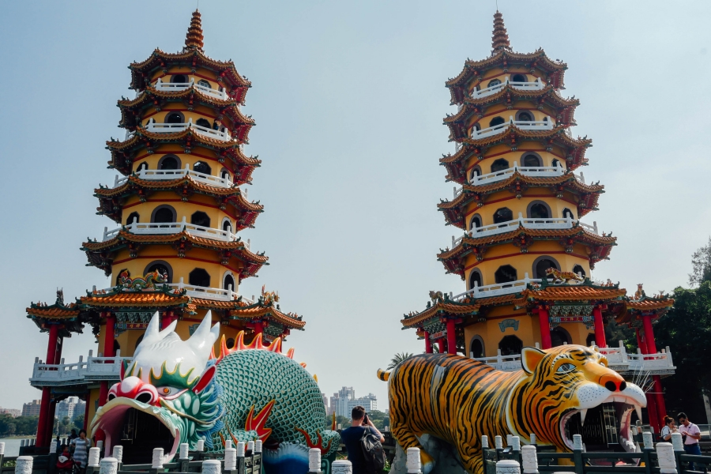
蓮池潭是具傳統色彩的風景區之一，蓮池潭還蠻大的，春秋閣、北極亭、和高雄孔廟也都位於蓮池潭風景區，尤其是大家最熟知的龍虎塔，據說從「龍口進虎口出」這樣就能趨吉避凶。 建議若想悠閒造訪蓮池潭，可租借高雄的公共腳踏車City Bike，龍虎塔附近就有租賃站，也可以直接騎回左營高鐵站或左營火車站歸還，非常方便！（畢竟蓮池潭離捷運或火車站還是有一些距離）
了解更多